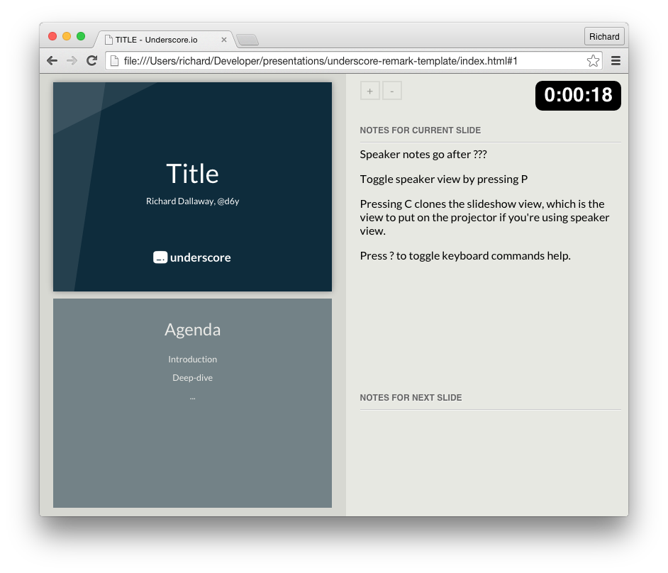

name: inverse layout: true class: underscore --- class: center, middle, hero .title[ # Title ## Richard Dallaway, [@d6y](http://twitter.com/d6y) [](http://underscore.io/) ] ??? Speaker notes go after ??? Toggle speaker view by pressing P Pressing C clones the slideshow view, which is the view to put on the projector if you're using speaker view. Press ? to toggle keyboard commands help. --- # Agenda 1. Introduction 2. Deep-dive 3. ... --- class: center, middle # Let's Write Some Code --- # Code ``` case class Wibble(x: Throwable \/ Long) { def answer = 42 } val f: Int => String = x.toString ``` --- class: center # Pictures & Title  --- background-image: url(screengrab.png) ??? That's the best I can find for a full-page image. The repeat may just be an issue with remark, [#211](https://github.com/gnab/remark/issues/211), specifically. --- class: center, middle > “I refuse to answer that question on the grounds that I don't know the answer” — Douglas Adams --- class: center, middle, hero .title[ # Thank You ## Richard Dallaway, [@d6y](http://twitter.com/d6y) ### http://underscore.io/ [](http://underscore.io/) ]